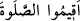
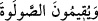
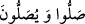
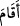

takvâ, huşû, ihlâs, tazim ve hürmet. Allah Teâlâ şöyle buyurur: “Allah ancak takvâ
sâhiplerinden kabul eder.” (el-Mâide, 5/27). Bu iki kısım yerine getirilmezse, namaz
tam kılınmış olmaz. Bu sebeptendir ki Yüce Rabbimiz Kur’ân’da kuluna namaz kılmayı
emrettiği veya namazla övdüğü yerlerde “
namazı ikâme edin.” (el-Bakara,
2/83) ve “
namazı ikame ederler (el-Bakara, 2/30) buyurur, “
namaz kılın ve namaz kılarlar” buyurmaz.
et-Te’vîlâtü’n-Necmiyye’de: “Namazı ikâme ederler” yâni samîmî bir yönelişle,
kalp huzuru içinde ve mâsivâdan yüz çevirerek namazı kılmaya devam ederler” der.
Cevherî’nin de dediği gibi “__WORD__ fiilinin başka bir anlamına, yâni ‘devam etti’ anlamına
işâret etmiştir.
Bir rivâyette şöyle buyrulmuştur: “İnsanların önünde beş büyük sarp yokuş vardır.
Onları ancak (ibâdet, riyâzat ve mücâhededen) incelmiş, bir deri bir kemik kalmış
kimseler aşabilir.”
Hz. Ebû Bekir (r.a.): “Onlar hangileridir, ey Allâh’ın Rasûlü?” diye sorunca
Peygamberimiz (s.a.) şöyle buyurdu: “Birincisi ölüm ve onun acısı, ikincisi kabir ve
onun yalnızlık ve darlığı, üçüncüsü münker ve nekir meleklerinin sorgusu ve onların
heybetleri, dördüncüsü mizan ve sevapların hafif gelmesi korkusu, beşincisi sırat
köprüsü ve onun inceliği.”
Bu sözleri duyan Ebû Bekir (r.a.) o kadar çok ağladı ki yedi kat gök ve bütün melekler
de onunla beraber ağlamaya başladı. Cibrîl (a.s.) gelip şöyle dedi: “Ey Muhammed!
Ebû Bekir’e ağlamamasını söyle. O, Arablar’ın: “Ölüm hariç her derdin bir devâsı
vardır.” sözünü duymadı mı?” Sonra şöyle devam etti: “Kim sabah namazını kılarsa
ona ölüm ve acısı kolay gelir. Kim yatsı namazını kılarsa ona sırat köprüsü ve onun
inceliği kolay gelir. Kim öğle namazını kılarsa ona kabir ve onun darlığı kolay gelir.
Kim ikindi namazını kılarsa ona münker ve nekirin sorgusu ve onların heybeti kolay
gelir. Kim de akşam namazını kılarsa ona mizan ve sevapların hafif gelme korkusu
kolay gelir.”
Namazda gevşeklik gösteren kimseyi ölüm anında Allâh’ın “Lâ ilâhe illallâh”
demekten men edeceği söylenir.
“Zekâtı verirler” yâni şartlarına riâyet ederek onu ehl-i sünnetten hak edenlere
verirler. Çünkü el-Eşbâh’ta geçtiği üzere tercih edilen görüşe göre bid‘at ehli kimselere
zekatın verilmesi câiz değildir.
Denilir ki zekatı men eden kimseden, malının muhâfazası men olunur/kaldırılır.
Sadakayı men eden kimseden de Allah sıhhat ve âfiyeti men eder/kaldırır. Nitekim
Rasûlullah (s.a.) şöyle buyurur: “Mallarınızı zekatla koruyun; hastalarınızı da sadaka
ile tedavi edin. Kim öşrü men ederse, Allah ondan toprağının bereketini men
eder/kaldırır.”[60]
et-Te’vîlâtü’n-Necmiyye’de denilir ki: “Onlar nefislerini tezkiye etmek için “zekat
verirler.” Avamın zekâtı, nefislerini cimrilik pisliğinden temizlemek için her yirmi